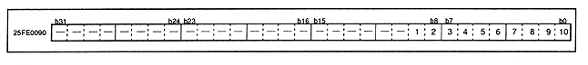

Figure 3.18 shows the details of the timer 0 compare register. (Timer 0 is a counter that counts up when the H-blank-IN signal is received and is cleared when the V-blank-END signal is received.)
Figure 3.18 Initial value of timer 0 compare register (register: T0C) is undefined
